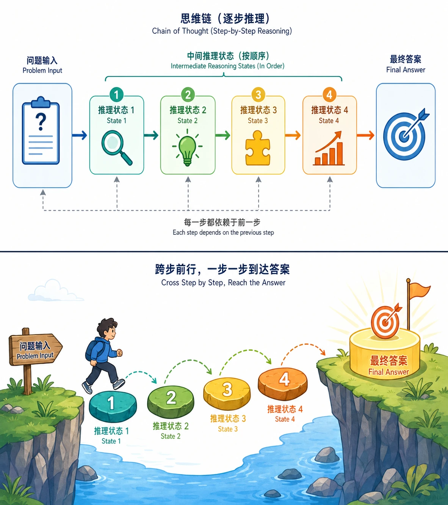

思维链提示
前置知识：05 GPT系列深度解析
内容时效：截至 2026 年 4 月
一、直觉：为什么模型需要"一步步想"？
人类的经验
考虑一道小学数学题：
一个停车场有 3 排车，每排 8 辆。开走了 5 辆，还剩几辆？
你不会直接蹦出答案"19"。你的思考过程是：
- 3 排 x 8 辆 = 24 辆
- 24 - 5 = 19 辆
这个"写出中间步骤"的过程，就是人类的思维链。
大模型的困境
早期使用 LLM 时，我们直接问问题、直接要答案：
Q: 一个停车场有 3 排车，每排 8 辆。开走了 5 辆，还剩几辆？
A: 17 ← 错误！模型跳过了中间步骤，直接"猜"了一个答案2022 年，Google 的 Wei 等人发现了一个简单却影响深远的现象：如果你让模型把中间步骤写出来，准确率会大幅提升。
Q: 一个停车场有 3 排车，每排 8 辆。开走了 5 辆，还剩几辆？
A: 首先，3 排 x 8 辆 = 24 辆。然后，24 - 5 = 19 辆。答案是 19。 ← 正确！这就是 Chain-of-Thought (CoT) Prompting 的核心直觉：
不要让模型直接给答案，让它先"想"再"答"。

为什么有效？因为自回归模型每次只生成一个 token，中间步骤的 token 提供了"工作记忆"——模型可以在后续 token 中"看到"自己之前算出的中间结果，而不必在一个 token 中完成所有计算。
二、原理：Chain-of-Thought Prompting
2.1 经典 CoT（Wei et al., 2022）
论文：Chain-of-Thought Prompting Elicits Reasoning in Large Language Models（Wei et al., NeurIPS 2022）
方法极其简单：在 few-shot prompt 的示例中，加入人工编写的推理过程。
标准 few-shot vs CoT few-shot
# ===== 标准 few-shot =====
Q: Roger 有 5 个网球。他又买了 2 罐网球，每罐 3 个。他现在有多少网球？
A: 11
Q: 自助餐厅有 23 个苹果。用了 20 个做午餐，又买了 6 个。有多少苹果？
A: 9
# ===== CoT few-shot =====
Q: Roger 有 5 个网球。他又买了 2 罐网球，每罐 3 个。他现在有多少网球？
A: Roger 一开始有 5 个球。2 罐 x 3 个 = 6 个新球。5 + 6 = 11。答案是 11。
Q: 自助餐厅有 23 个苹果。用了 20 个做午餐，又买了 6 个。有多少苹果？
A: 一开始有 23 个苹果。用了 20 个后剩 23 - 20 = 3 个。又买了 6 个，3 + 6 = 9。答案是 9。核心发现：
| 模型规模 | 标准 few-shot | CoT few-shot | 提升 |
|---|---|---|---|
| PaLM 8B | 33.0% | 33.6% | +0.6% |
| PaLM 62B | 43.6% | 58.6% | +15.0% |
| PaLM 540B | 56.9% | 74.4% | +17.5% |
关键洞察：
- CoT 是涌现能力：只在大模型（约 100B+ 参数）上才显著生效。小模型不仅不受益，甚至可能产生错误的推理链。
- 越难的问题，CoT 提升越大：对简单问题（如单步运算）几乎无提升，对多步推理问题提升巨大。
- 无需训练：CoT 不改变模型参数，只改变提示方式。这意味着推理能力已经"潜伏"在预训练模型中，CoT 只是"激活"了它。
2.2 为什么 CoT 有效？——机制假说
CoT 为什么能提升推理能力？目前有几种互补的解释：
假说 1：扩展工作记忆
自回归模型本质上是一个固定深度的计算图——每个 token 经过相同的 L 层 Transformer 计算。模型的"思考能力"受限于这 L 层能做的计算量。
CoT 通过在输出中生成中间步骤，相当于把"一次性完成的计算"分解成了"多步顺序计算"。每个中间 token 都为后续计算提供了额外的信息，本质上扩展了模型的有效计算深度。
直接回答: 输入 → [L层计算] → 答案 # 受限于 L 层的计算能力
CoT: 输入 → [L层] → 步骤1 → [L层] → 步骤2 → [L层] → 答案
# 有效计算深度 = L × 步骤数假说 2：将困难问题分解为简单子问题
多步推理问题的难度在于需要同时处理多个子计算。CoT 将一个困难的多步问题分解为多个简单的单步子问题，每个子问题都在模型的能力范围内。
假说 3：预训练数据中的推理模式
模型在预训练时见过大量"问题 → 推理步骤 → 答案"的文本（教科书、数学论坛、编程教程等）。CoT 提示"激活"了模型对这些模式的记忆。
三、Zero-shot CoT："Let's think step by step"
3.1 原理（Kojima et al., 2022）
论文：Large Language Models are Zero-Shot Reasoners（Kojima et al., NeurIPS 2022）
Wei 2022 的 CoT 需要人工编写示例（few-shot），这有两个问题：
- 需要领域知识：你得自己先会解题，才能写出正确的推理示例
- 不同任务需要不同示例：数学题、逻辑题、常识推理的示例格式各不相同
Kojima 等人的发现令人惊讶：只需在问题后面加一句 "Let's think step by step"，模型就会自动生成推理过程，效果接近精心设计的 few-shot CoT。
两阶段流程
# 第 1 阶段：提取推理过程
Prompt: "Q: [问题]\nA: Let's think step by step."
Output: "首先...然后...所以..." # 模型自动生成推理链
# 第 2 阶段：提取最终答案
Prompt: "[第 1 阶段的完整输出]\nTherefore, the answer is"
Output: "42"3.2 效果对比
| 方法 | MultiArith | GSM8K | SVAMP |
|---|---|---|---|
| 标准 zero-shot | 17.7% | 10.4% | 58.8% |
| Zero-shot CoT | 78.7% | 40.7% | 79.0% |
| Few-shot CoT (8-shot) | 83.8% | 46.9% | 79.0% |
核心发现：
- Zero-shot CoT 在大多数推理任务上接近 few-shot CoT
- 不需要任何示例，通用性极强
- 不同的触发短语效果差异很大："Let's think step by step" 显著优于 "Let's solve this problem" 等变体
四、Self-Consistency：多路径采样 + 投票
4.1 核心问题
CoT 的一个弱点：模型可能生成一条看似合理但实际错误的推理链。就像学生做题时，可能某一步计算错了，导致整条推理链和最终答案都错。
4.2 原理（Wang et al., 2023）
论文：Self-Consistency Improves Chain of Thought Reasoning in Language Models（Wang et al., ICLR 2023）
核心思想极其朴素：一道题让模型做多次，取最常见的答案。
同一个问题，让模型"思考"多次（用较高的 temperature 采样）：
路径 1: ... 3 × 8 = 24, 24 - 5 = 19 → 答案 19
路径 2: ... 3 + 8 = 11, 11 - 5 = 6 → 答案 6 ← 错误路径
路径 3: ... 8 × 3 = 24, 24 - 5 = 19 → 答案 19
路径 4: ... 3 × 8 = 24, 24 - 5 = 19 → 答案 19
路径 5: ... 每排 8 辆 × 3 = 24, 减 5 = 19 → 答案 19
多数投票：19 (4票) vs 6 (1票) → 最终答案 19为什么有效？
- 正确的推理路径比错误的更"常见"：对于模型能力范围内的问题，正确的推理步骤通常有更高的概率，因此在多次采样中更容易出现。
- 错误的路径是多样的：不同的错误方式导致不同的错误答案，这些错误票数被分散了，而正确答案的票数集中。
- 本质上是一种集成学习（Ensemble）：多次采样相当于多个"推理器"的投票。
4.3 关键设计选择
| 设计维度 | 选择 | 原因 |
|---|---|---|
| 采样温度 | 0.5~0.7 | 太低(0)则所有路径相同，太高(1.0+)则推理质量下降 |
| 采样次数 | 5~40 次 | 收益递减：5→10 提升明显，20→40 提升很小 |
| 投票方式 | 多数投票 | 对答案做频率统计，取频率最高的 |
| 答案提取 | 最终数字/选项 | 只对最终答案投票，不对推理过程投票 |
4.4 效果
| 方法 | GSM8K | SVAMP | AQuA |
|---|---|---|---|
| CoT (greedy, 1 path) | 56.5% | 79.0% | 52.0% |
| Self-Consistency (40 paths) | 74.4% | 86.6% | 62.2% |
| 提升 | +17.9% | +7.6% | +10.2% |
4.6 Self-Consistency 的成本分析
Self-Consistency 的主要代价是推理成本成倍增加：
单次 CoT 推理成本: C
Self-Consistency (N=10): 10 × C
Self-Consistency (N=40): 40 × C实际权衡：
五、CoT 变体汇总
5.1 技术对比
| 方法 | 提出时间 | 核心机制 | 是否需要示例 | 额外成本 |
|---|---|---|---|---|
| Few-shot CoT | 2022.01 | 手动编写推理示例 | 是（需要人工编写） | 无（单次推理） |
| Zero-shot CoT | 2022.05 | "Let's think step by step" | 否 | 无（单次推理） |
| Self-Consistency | 2022.03 | 多次采样 + 多数投票 | 可选 | N 倍推理成本 |
| Auto-CoT | 2022.10 | 自动生成 CoT 示例 | 自动生成 | 一次性构建 |
| Complexity-based | 2023 | 选择推理步骤最多的答案 | 可选 | N 倍推理成本 |
5.2 实用选择指南
你想提升推理任务的效果吗？
│
├── 模型规模 < 10B？
│ └── CoT 可能效果有限，考虑微调或换更大模型
│
├── 模型规模 ≥ 10B？
│ │
│ ├── 有时间写示例？
│ │ └── 用 Few-shot CoT（效果最稳定）
│ │
│ ├── 没时间 / 任务太多样？
│ │ └── 用 Zero-shot CoT（加一句 "Let's think step by step"）
│ │
│ └── 对准确率要求高，预算充足？
│ └── 用 Self-Consistency（5~10 次采样，投票）
│
└── 有专门的推理模型 API（如 o1/o3）？
└── 直接使用推理模型（见第 3 节）六、从 CoT 到推理模型的演进
CoT 提示技术揭示了一个核心洞察：
让模型"思考更多"能显著提升推理能力。
这个洞察催生了两条技术路线：
CoT (2022)
├── 提示工程路线 → Zero-shot CoT → Self-Consistency → ToT/GoT（→ 第 2 节）
│ 核心：不改模型，改提示和解码策略
│
└── 模型训练路线 → 训练模型自动产生长推理链 → o1/o3/R1（→ 第 3 节）
核心：通过 RL 训练模型主动"慢思考"下一节我们将探讨提示工程路线的高级方法：Tree-of-Thought、Reflexion 等。第 3 节将转向模型训练路线。
本节小结
| 概念 | 一句话解释 |
|---|---|
| Chain-of-Thought | 在示例中展示推理步骤，激活模型的推理能力 |
| Zero-shot CoT | 一句 "Let's think step by step" 即可触发推理 |
| Self-Consistency | 多次采样 + 多数投票，提升推理可靠性 |
| CoT 为何有效 | 扩展工作记忆 + 分解复杂问题 + 激活预训练知识 |
| 涌现性 | CoT 只在大模型(100B+)上有效，小模型反而可能更差 |
时效性说明
本节内容基于 2022-2023 年的经典论文，方法本身已相对稳定。但需注意：
- 截至 2026.4，CoT 相关的理论解释仍在研究中，"为什么 CoT 有效"尚无定论
- 随着推理模型（o1/o3 等）的普及，手动 CoT 提示的必要性可能降低——模型本身会自动进行长链推理
- Self-Consistency 的"多数投票"是最简单的聚合方法，更高级的聚合方法（如加权投票、验证器过滤）在 2024-2025 年有较多进展
返回 本模块 README | 下一节 高级推理方法